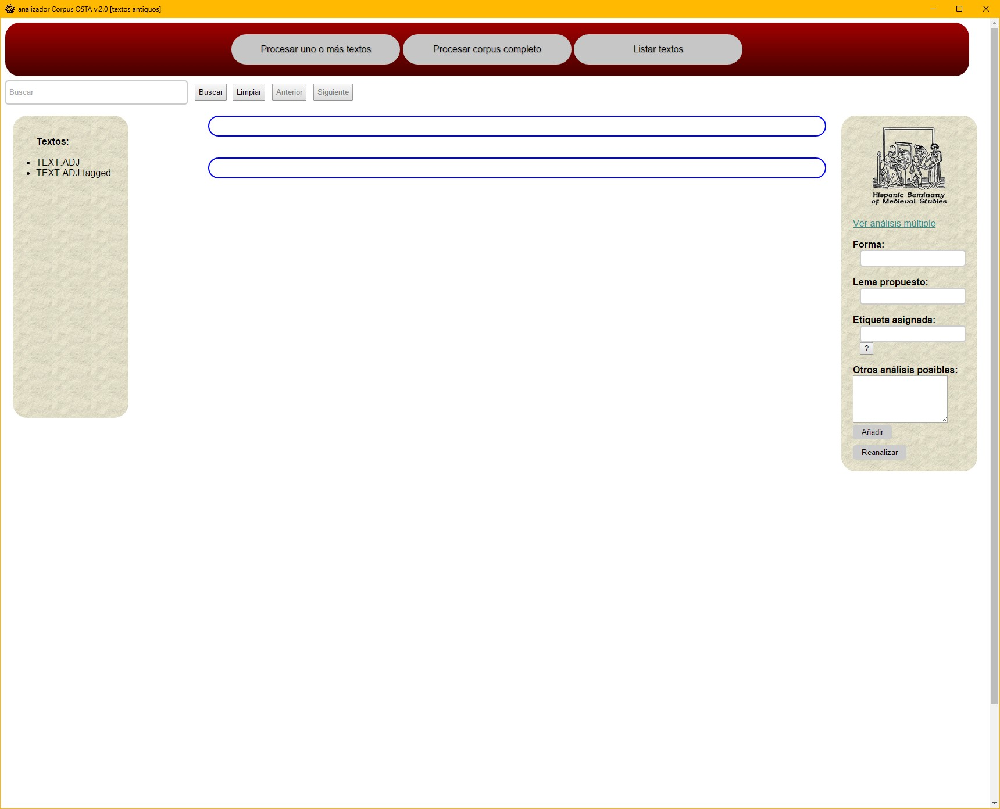
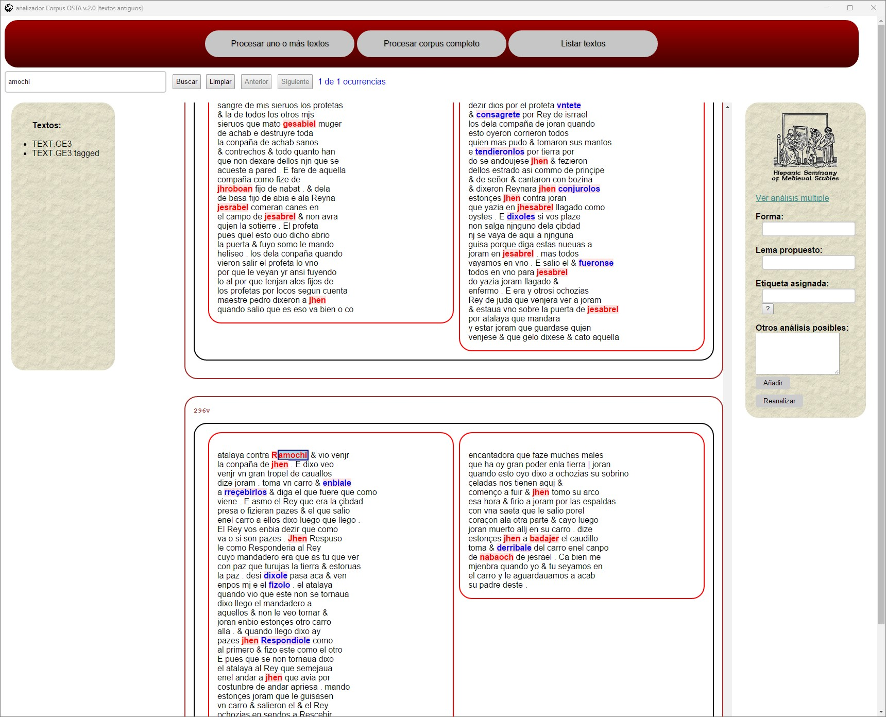
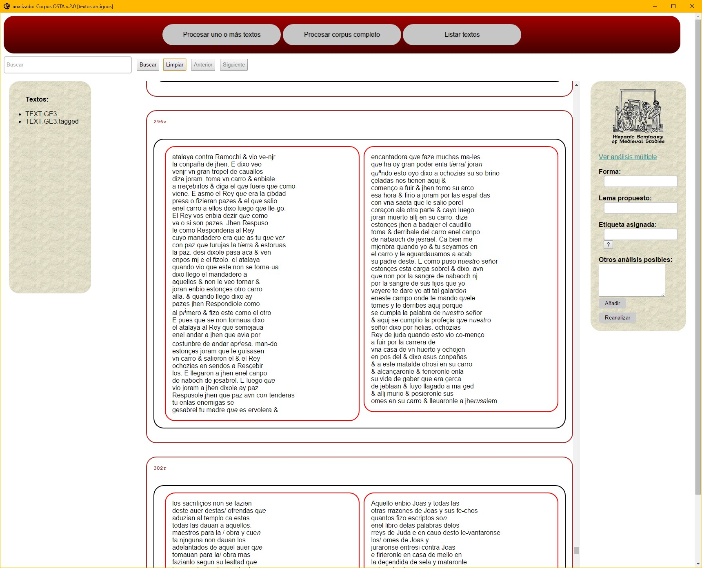

Problemas conocidos
Copias de seguridad
Para poder recuperar una versión de hsms.src que funcione correctamente es conveniente trabajar con dos ficheros master-hsms.src y hsms.src, inicialmente idénticos, pero que tras una sesión de trabajo cambian ya que el Analizador Corpus OSTA solo efectúa cambios en hsms.src. De esta forma es posible recuperar una versión funcional de hsms.src en caso de que hubiera un error. Herramientas como WinMerge, para Windows, o Meld, para Mac, permiten comparar los ficheros y detectar así los posibles errores.
Errores de formateado de las entradas
En algunas ocasiones el Analizador Corpus OSTA muestra la siguiente pantalla tras reanalizar una transcripción.

Esto indica la existencia de un error en alguna de las entradas del diccionario:
- hay un espacio en blanco
˽extra entre alguno de los componentes de una entrada:
forma lema1 ˽PoS1
- hay un espacio en blanco
˽extra al comienzo o final de una entrada:
˽forma lema1 PoS1
forma lema1 PoS1 2˽
- no hay espacio en blanco entre alguno de los componentes de una entrada:
formalema1 PoS1
forma lema1PoS1
- en lugar de un espacio en blanco entre cada de los componentes de una entrada hay un guion bajo (
_), resultado de no haber usado@para separar lema y análisis morfológico en la caja Otros análisis posibles:
desamava desamar VMII1S0 desamar_VMII3S0
- la entrada está mal formada, faltándole alguno de sus componentes
forma lema1 PoS1 lema2
forma lema1 lema2 PoS2
Errores de definición de las formas aglutinadas
En algunas ocasiones el Analizador Corpus OSTA no completa el análisis de la transcripción, quedando la operación interrumpida. En la siguiente imagen se ve cómo la columna B no ha sido analizada en su totalidad.

Algo que se puede comprobar al hacer clic en el fichero TEXT.SIGLA, en la barra de textos, donde se ve que el texto sin analizar aparece en su totalidad.

Este tipo de error lo ocasiona el análisis incompleto de una forma aglutinada. Al definir la forma aglutinada degjpto separando sus dos componentes:
degjpto d+egjpto SP+NP
aunque no hay ningún error en la definición, la forma egjpto no está definida en el diccionario, por lo que Analizador Corpus OSTA no puede continuar procesando el texto cuando se encuentra con esta forma definida parcialmente. Para que no se produzca este tipo de error bastaría con añadir al diccionario el siguiente análisis:
egjpto Egipto NP000G0